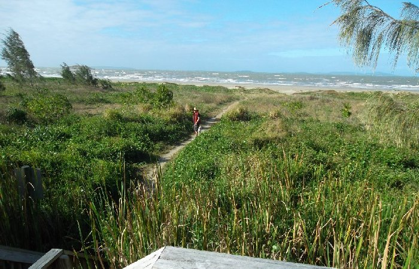

Standing at the end of our driveway, looking across the road towards the beach walkway and beach reserve. Our local bus stop is just visible to the left of our large "Kinka Palms Motel" sign.

Standing on the edge of the beach reserve at the top of the stairs, at the beach end of the walkway to the beach. This is the section of Kinka Beach right in front of Kinka Palms Motel.
Standing on Kinka Beach: Looking along Kinka Beach to the north-east, right in front of Kinka Palms Motel.
In the middle distance, you can see 2 islands:
Iron Pot (also called Bluff Rock) and
Seagull Island (also called Creek Rock).
And in the far distance you can see North Keppel Island and other islands
(which are difficult to make out in this photo).
At least 12 islands are visible off shore when standing on Kinka Beach.
Standing on Kinka Beach: Looking along Kinka Beach to the south-east, right in front of Kinka Palms Motel.
When the tide goes out, it goes out a long way.
Even at high tide, there's tons of room to fly kites, play beach cricket, and run and play !
And, our beautiful beach is almost always deserted or nearly deserted.
Standing on Kinka Beach: Here's a low resolution panorama of the truly spectacular view from Kinka Beach
in front of Kinka Palms Motel.
More than 12 islands are easily visible (with the naked eye) off-shore (you can actually see about 16 islands, but some islands are hard to differentiate because they overlap other islands from this vantage point).
Here are all the islands you can see from Kinka Beach from left to right: Bluff Rock (Iron Pot), Pleasant Island (Canonical Island), Corroboree Island (Terimul Island), North Keppel Island (Konomie Island), Pumpkin Island (is actually 2 islands), Sloping Island, an un-named island in this same group, Creek Rock (Seagull Island), Miall Island (Mamalonbi Island), Middle Island (Balaba Island), Great Keppel Island (Woppa Island), Halfway Island, Humpy Island (Burye Burye Island), Pelican Island, and Wedge Island.
Standing on the little island at the southern end of Kinka Beach, looking West, back towards the mainland.
You can only get to the island via a land bridge at low tide.
Kinka Beach is an important bird sanctuary for migrating birds, and this sign
on the walkway to the beach tells you about some of the birds that visit our area.
This sign mentions 6 species of bird: Bar-Tailed Godwits, Red-Capped Plovers, Eastern Curlews, Whimbrels, Double-Banded Plovers, and Red-Necked Stints.
However, many other species of bird can be seen in the vacinity of Kinka Beach and Kinka Palms Motel, including: Seagulls, Egyptian Ibis, Australian Magpies, Willie Wagtails, Pelicans, Herrons, Oystercatchers, Gallahs, Red-Tailed Black Cockatoos, White Cockatoos, Sea Eagles, Crows, Rainbow Lorrikeets, Kookaburras, Butcher Birds, Sunbirds, Cockatiels, Emus, Bush Turkeys, and many others (depending on the season / time of year).